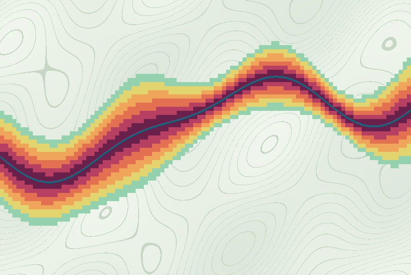

Build the inputs
Choose a study area and assemble elevation, terrain, drainage, river, land-cover and exposure layers on a common grid.
SIAVASH & FARHAD is a research WebGIS for flood screening in data-scarce regions. Define a study area, compare flood scenarios, and export hazard and risk maps for further analysis.

Choose a study area and assemble elevation, terrain, drainage, river, land-cover and exposure layers on a common grid.
Use GloFAS reference depths or XGBoost estimates. Explore baseline conditions and potential weak-line closures, then compare FOEN and ADR7 hazard classes.
Combine flood hazard with exposure and vulnerability. Download GeoTIFFs and run reports for use in GIS and further assessment.
Getting started. Run the browser checks, then draw a study area or pick the Aqqala or Poldokhtar example. Live Earth Engine retrieval requires your own configured account.
Intended use. The WebGIS supports research and preliminary flood screening. Site-specific engineering decisions require independent assessment.
Fouladi Semnan, A., & Ostad Mirza Tehrani, M. J. (2026). SIAVASH: A solver-free, cloud-native EO–ML framework for weak-line screening and flood hazard mapping in data-scarce regions. Results in Engineering, 32, 113357.
10.1016/j.rineng.2026.113357Fouladi Semnan, A., & Ostad Mirza Tehrani, M. J. (2026). Fully Automated Risk and Hazard Assessment for Decision-support (FARHAD): A Cloud-Native Machine-Learning Framework for Worst-Case Scenario Flood-Risk Mapping via Weakline Analysis. Water Resources Management, 40, 426.
10.1007/s11269-026-04786-xSTEP 00
Python + WebAssembly · separate background worker
Run this check first to verify that your browser can process a small synthetic dataset. The first run downloads the Python runtime and scientific packages from jsDelivr and may take several minutes. No sign-in or data upload is required.
Run the checks to generate a report.
After the checks pass, continue to Step 01 · Study area and elevation.
STEP 01
SRTM elevation · 30 m UTM grid · maximum 25 km²
This step retrieves elevation only. The exported raster covers the snapped UTM bounding grid. Slope, aspect, curvature and TRASP are available below. Drainage routing and wetness are available below. Hazard mapping uses this same grid.
Draw a rectangle with two map clicks, or enter its coordinates below.
Loading map and projection…
Use an Earth Engine-enabled Cloud project and a Web OAuth client configured for this website. Access tokens stay in browser memory.
Save the project ID and OAuth client ID on this browser. Reconnect with Google when you return.
https://afshinfs.github.io as an authorised JavaScript origin (without the repository path).For local development, add the exact localhost origin you use as well.
Google’s client setup guideSTEP 02
Slope · aspect · planform curvature · TRASP
Current inputs: single-band, single-image, north-up WGS84 UTM GeoTIFFs with square metre pixels, up to 512 × 512 cells and 8 MB. Hydrology and drainage includes depression filling, flow accumulation and TWI.
Retrieve a DEM under Study area or open a downloaded DEM here.
Horn (1981) slope/aspect and Zevenbergen–Thorne (1987) planform curvature, with the original curvature scale and TRASP formula. Compared with a pinned RichDEM native reference on six cases, including the downloaded Poldokhtar DEM. NoData footprint and grid alignment are preserved.
Edges and missing neighbours use the centre elevation, as in the original implementation. Aspect on flat cells uses the reference convention of 270°; flat terrain has no physical downslope direction. Allow a buffer around your final analysis area to reduce edge effects.
STEP 02
Filled DEM · D8 direction · flow accumulation · TWI
Retrieve a DEM under Study area or open a downloaded DEM here.
Priority-Flood fills depressions, then D8 routes to the steepest lower neighbour. Filled flats follow a deterministic drainage tree without adding artificial elevation increments. Raster edges and NoData holes are open drainage boundaries. Flow accumulation counts contributing cells, including the cell itself; its preview uses logarithmic colours.
D8 codes: E=1, SE=2, S=4, SW=8, W=16, NW=32, N=64, NE=128; outlet=0. Equal downhill gradients prefer this same order. TWI preserves the desktop formula: ln((flowacc + 1) / (tan(original DEM slope) + 0.001)), with slope clipped to 0–89.9°. This is a count-based index. Flat routing may differ from RichDEM; desktop equivalence has not yet been established.
Use a buffered DEM: contributing catchments outside the downloaded grid are omitted. Inputs have the same 512 × 512 cell and 8 MB limits as terrain processing. This step does not simulate flooding.
STEP 03
Distance to rivers · distance to major roads · river density
Live requests send the DEM search bounds to the selected public Overpass server. Automatic mode tries FOSSGIS first and switches to Private.coffee on a temporary server or connection error. It searches approximately 1 km beyond the DEM. Calculations run in your browser.
Retrieve a DEM under Study area or open a downloaded DEM here.
OSM source: live Overpass API
Filters match the desktop defaults: waterway=river, and highways trunk, trunk_link, primary and primary_link. Streams and smaller roads are excluded. River lines appear blue on the study-area map; major roads appear brown. The GeoJSON download preserves WGS84 line geometry.
Lines are buffered by half a cell (at least 5 m) and rasterised into every touched pixel. Distances in metres are measured between buffered raster pixels, not exact line centrelines. River density is a local smoothed pixel fraction (0–1), using a 200 m target odd window and Gaussian smoothing; it is not length per km².
Searches extend approximately 1 km beyond the DEM; more distant features are omitted. Missing road/river features yield NoData distances, rather than a guessed distance. OSM coverage is variable and only ways are retrieved. Saved files must cover this search area; their completeness cannot be verified automatically. Rasterisation and query extents can differ from the desktop implementation.
Use a single-band north-up WGS84 UTM GeoTIFF with square 10–100 m pixels, at most 512 × 512 cells, 25 km² and 8 MB. Each server has up to 45 seconds to respond; cancel is available.
Data © OpenStreetMap contributors, ODbL. Respect applicable attribution and database-licence requirements when reusing OSM-derived outputs.
STEP 03
Land cover · Manning n · NDVI · rainfall · precipitation anomaly · soil proxy · MERIT elevation
Date ranges are end-exclusive and limited to 366 days. The anomaly compares the target accumulation with the same ending calendar month across at least 30 complete baseline years. It uses the desktop z-score formula, rather than a gamma-fitted SPI. Its baseline calculation can take longer; deselect unneeded datasets for a smaller request.
Connect Google under Study area, then retrieve or open a DEM.
Retrieve a DEM under Study area or open a downloaded DEM here.
The same Earth Engine connection is reused; no additional sign-in is required. Requests use the DEM's exact CRS, affine transform and dimensions. Source masks and the DEM footprint are preserved. Missing source data stay NoData. Completed layers remain available if another dataset fails or retrieval is cancelled.
WorldCover classes and soil texture use nearest-neighbour sampling. Continuous NDVI, rainfall, anomaly and MERIT elevation use bilinear sampling. NDVI is a mean of per-scene (B8−B4)/(B8+B4), retaining Sentinel-2 SCL classes 4, 5, 6 and 11. An observation-count layer is also exported. This uses SCL without QA60 to cover the QA60 availability gap; it differs from the desktop cloud mask. No L1C fallback is used.
The soil-group output is a proxy derived from OpenLandMap 0 cm texture using the desktop lookup, not measured hydrologic soil groups. MERIT hnd is kept as adjusted elevation above the EGM96 geoid. True relative height above drainage has not been calculated and should not be substituted with this band.
Sampling coarse products to a 30 m DEM does not create 30 m source detail: WorldCover is 10 m, Sentinel-2 bands are 10–20 m, CHIRPS approximately 5.6 km, soil texture 250 m and MERIT approximately 90 m. CHIRPS is restricted here to 50°S–50°N. Full desktop equivalence and flood-model accuracy remain unvalidated.
Sources and attribution: ESA WorldCover · Copernicus Sentinel-2 · CHIRPS · OpenLandMap · MERIT Hydro. Source dataset licences and attribution apply to downloaded data.
STEP 03
Connect your Google account under Study area to retrieve exposure layers.
Retrieve a DEM under Study area or open one here.
GHSL estimates residential population per 100 m source cell. This panel converts it to people per km² and expresses built-up surface as a fraction of a 100 m source cell. Both are sampled onto the DEM grid. Use the native source grid for population totals.
The GHSL building presence proxy flags cells that overlap nonzero 2018 built-up surface from the 10 m product. Google Open Buildings uses detected 2023 footprints where the dataset has coverage. In the footprint mask, 0 means no mapped detections at that cell.
VIIRS uses all 12 monthly composites for the selected year. The annual mean uses months with positive cloud-free coverage per pixel. The accompanying count shows how many months contributed. VIIRS source pixels are approximately 464 m.
GeoTIFFs retain the DEM grid and mask. Regridding does not increase the source resolution. These exposure layers provide inputs for the risk stage.
STEP 04
JRC GloFAS v2.1 · river flood depth in metres · 90 m source grid
Retrieve a DEM under Study area or open one here.
Depths are modelled river flood estimates. Bilinear resampling aligns them to the DEM grid without adding spatial detail. Within a GloFAS tile, a masked depth on mapped land is treated as 0 m. Enabled quality masks, open water without a depth, and areas outside coverage remain NoData. The download report includes zero-depth and NoData counts. Preview colours are scaled to each layer.
The fit uses the desktop pixel-wise linear regression on the Gumbel reduced variate. It interpolates the 25-, 30-, and 300-year depths and extrapolates the 1,000-year depth beyond the published range. Negative fitted depths are set to zero. The published 100-year layer remains available directly. JRC GloFAS v2.1 catalogue
STEP 05
Check the terrain, hydrology, road and river, and environmental predictors against the DEM grid. The depth targets are 30, 100, 300, and 1,000 years.
The check uses WebGIS outputs from this session. Local files with their original export names override matching layers. All files are read in your browser. Align mismatched files to the DEM before checking again.
Usable cells have a valid DEM, all required predictors, and a valid depth target for that period. Spatial-block counts show how many 40 × 40 cell blocks contain usable cells.
| Period (years) | Reference cells | Usable cells | Wet cells ≥ 0.05 m | 40-cell blocks | Status |
|---|
| Layer | Source | Valid cells | Status |
|---|
Training prunes correlated predictors and tests 30 XGBoost parameter combinations per return period. The desktop default shuffles pixels across five folds. Spatial validation holds out entire 40 × 40-cell blocks and automatically uses two to five folds, based on the lowest occupied block count across the four return periods.
The reported scores use the folds that select the model settings. Predictions are limited to cells with valid reference depth for each return period. Depth exports mark cells below 0.05 m and unsupported cells as NoData.
| Period (years) | Reference cells | Dry reference cells | Excluded without reference | RMSE (m) | R² | Wet prediction cells | Downloads |
|---|
STEP 06
Screen the flood depths along a river corridor boundary. Candidates are grouped along the DEM cell edges and assigned to the first return period that exceeds the depth threshold.
The 25-year footprint uses cells deeper than its threshold. An aligned local GeoTIFF overrides the fitted 25-year depth.
GloFAS reference depths. Uses the aligned GloFAS reference depth grids to screen candidate weaklines and compare open and closed scenarios.
XGBoost predictions. Uses the four depth grids produced by XGBoost in Step 05. Train the models before choosing this source.
The open state is the baseline. Each scenario closes a subset of the eligible weaklines and leaves the other lines open. Scenarios with the same raster barrier are routed once.
All open and closed combinations tests every subset of eligible weaklines. It can take much longer as the number of weaklines grows.
Limited combinations tests each weakline alone, progressively adds weaklines in candidate order, and tries up to 200 additional pairs or triplets per return period.
| Years | Eligible lines | Possible closures | Routed masks | Winning lines | Score |
|---|
Both runs use a priority-flood calculation on water-surface elevation. The closure raises the grid cells along the selected weaklines. Results are for screening and require hydraulic validation before use in design.
| Metric | Open baseline | Closure | Change |
|---|
STEP 07
Estimate Manning velocity and depth × velocity, then map FOEN danger and ADR7 classes for the 30-, 100-, 300-, and 1,000-year events. Velocity is a terrain-based screening estimate. FOEN combines the first classified return period with low, middle or high intensity. A first exceedance at 1,000 years is residual. ADR7 assigns H1–H6 using depth, velocity and their product. The FOEN matrix GeoTIFF preserves the original frequency–intensity codes.
GloFAS reference depths. Calculates FOEN and ADR7 classes from the aligned GloFAS reference depth grids.
XGBoost predictions. Calculates classes from Step 05 predictions. Where predictions are missing, it uses aligned GloFAS depths if available. For closure scenarios, use the same source as Step 06.
Highest classified hazard across the four return periods.
STEP 08
Combine the final FOEN danger matrix from the champion basis and the ADR7 first-flood hazard with vulnerability and exposure on the study-area grid.
Use Step 03 exposure layers for population and buildings. Select the depth source and scenario in Step 07 flood hazard maps.
STEP 09
Choose completed map outputs from this session. The report clips them to the rectangle applied in Step 01.